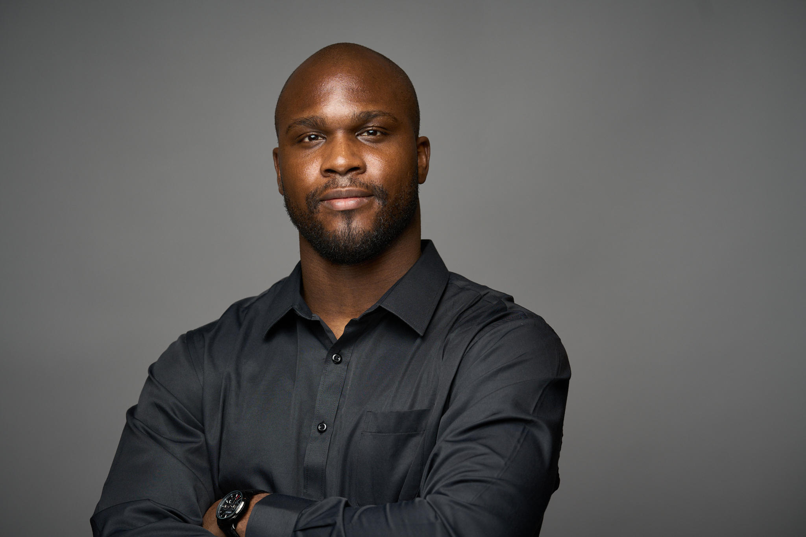

859 Spring Street, Atlanta, GA |
uruonyemaobi@gmail.com |
LinkedIn |
(872) 271-6753 |
Github

An Applied Statistics and Decision Sciences Graduate Student pursuing a Dual Master’s Degree in Political Science and Public Policy. Applying Artificial Intelligence to contribute to air travel satisfaction and aviation. Contributing to the building of AI agents that collaborate seamlessly with us.
Western Illinois University (2022-2025)
Master of Sciences: Decision Sciences- Applied Statistics and Decision Sciences
Master of Arts: Political Science- Public Administration and Public Policy
LCC International University (2018-2021)
Bachelor of Business Management – International Business Administration
Delta Airlines, Inc, Atlanta, GA
Data Science Masters Intern- Consumer Insights and Innovation➡ June 2023- Dec 2024
National Society of Black Engineers (Western Illinois University- Region IV)
President ➡ June 2024- May 2025
National Society of Black Engineers (Western Illinois University- Region IV)
Secretary ➡ May 2023- May 2024
Title VI International Research Grant (Western Illinois University)
Graduate Assistant ➡ Oct. 2022 – Dec.2023
Student Athlete (Lithuania- KK Riflis)
Power Forward ➡ 2018 – 2021
Midwest Model United Nations 63, St. Louis, MO
Hungarian Delegation- Team Lead (Feb 22-25, 2023)
UAB Dokana Vilnius, Lithuania
Language Translation Consultant ➡ Aug.2021- June 2022
Data Science | Python | SQL | PyTorch | Transformers | Beautiful Soup | Pandas | Scipy.Stats | Numpy | Tableau | HTML | Public Policy | Qualitative and Quantitative Social Science Research | Compassion